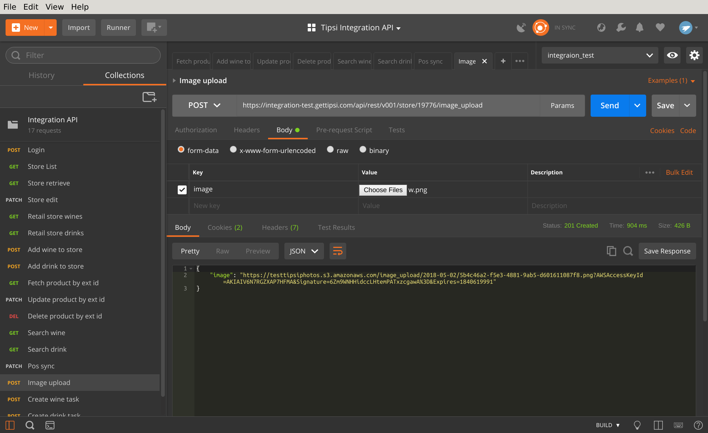
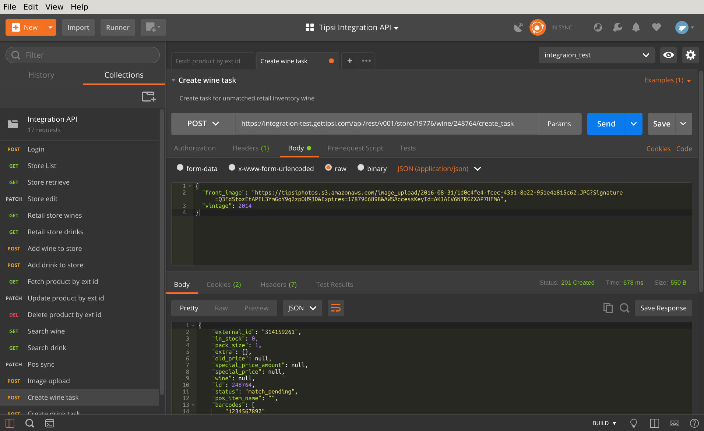

Label Processing Tasks Guide¶
Note
To create tasks via integration API you should have this option enabled by Tipsi team. Please contact support if API doesn’t work for you
Label processing tasks is a way to match products manually by Tipsi team. It requires product front label picture and optionally back label, for wines it’s also recommended to send vintage. If vintage is not send and there is no vintage on wine label, the most recent vintage will be used by default.
Label processing tasks are created in 3 steps:
- Create inventory /api/rest/v001/store/<store_id>/{wine,drink} - Create store wine/drink or use the existing one. Tasks creation is only allowed for items in unmatched state.
- Upload image (or images)
- Create label tasks
Upload image¶
Perform POST request to /api/rest/v001/store/STORE_ID/image_upload to upload image. The returned image URL will be used in create tasks API.
Upload image to Tipsi server. The endpoint will return image URL, which can be used later for label tasks creation.
See /api/rest/v001/store/<store_id>/image_upload - Upload image
Create task for unmatched inventory item¶
You can create task by sending POST to /api/rest/v001/store/STORE_ID/wine/INVENTORY_ID/create_task or /api/rest/v001/store/STORE_ID/drink/INVENTORY_ID/create_task.
Note
INVENTORY_ID is Tipsi id, it’s returned once a new inventory created on POST to /wine or /drink
Create product label processing tasks, those tasks will be processed by Tipsi team. Once label uploaded, it’s possible to track its status by checking “status” field of inventory struct.
See api/rest/v001/store/<store_id>/{wine,drink}/<wine_inventory_id>/create_task - Create task